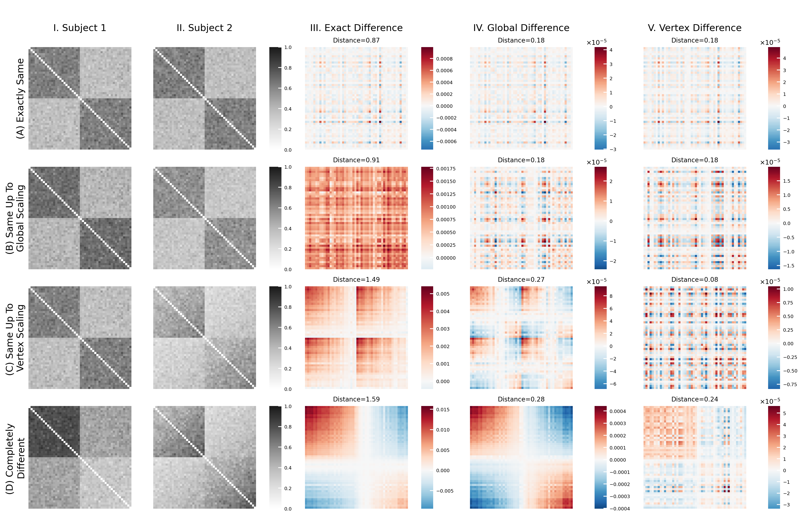

Show code cell content
import matplotlib as mpl
import matplotlib.pyplot as plt
import numpy as np
import seaborn as sns
from graspologic.align import OrthogonalProcrustes
from graspologic.embed import AdjacencySpectralEmbed
from graspologic.simulations import sample_edges
from pkg.inference import difference, difference_norm
from pkg.plot import heatmap
Show code cell content
def compute_diff_mats(X, Y, d=2):
X_hat = AdjacencySpectralEmbed(n_components=d, check_lcc=False).fit_transform(X)
Y_hat = AdjacencySpectralEmbed(n_components=d, check_lcc=False).fit_transform(Y)
exact = difference(X_hat, Y_hat, "exact")
exact_norm = np.linalg.norm(exact)
# exact = exact @ exact.T
global_ = difference(X_hat, Y_hat, "global")
global_norm = np.linalg.norm(global_)
# global_ = global_ @ global_.T
vertex = difference(X_hat, Y_hat, "vertex")
vertex_norm = np.linalg.norm(vertex)
# vertex = vertex @ vertex.T
# idx = np.diag_indices_from(exact)
# exact[idx] = 0
# global_[idx] = 0
# vertex[idx] = 0
return exact, global_, vertex, exact_norm, global_norm, vertex_norm
Show code cell content
def simulate(scale, reps=100):
n = 25
ns = [n, n]
node_labels = ["Left"] * n + ["Right"] * n
u = np.array(
[
[1 / 4, 3 / 4],
[3 / 4, 1 / 4],
]
)
X = np.tile(u, n).reshape(-1, 2)
w = np.array(
[
[4 / 5, 2 / 5],
[2 / 5, 2.1 / 5],
]
)
Y = np.tile(w, n).reshape(-1, 2)
networks = []
diffs = []
norms = []
for i in range(reps):
np.random.seed(i * 4 + 100)
if scale == "exact":
P1 = X @ X.T
P2 = X @ X.T
elif scale == "global":
P1 = X @ X.T * 1.1
P2 = X @ X.T * 0.9
elif scale == "vertex":
degree_correction = np.diag(np.tile(np.linspace(0.75, 1, n), 2))
# degree_correction = np.diag(np.random.uniform(size=50))
P1 = X @ X.T
P2 = degree_correction @ X @ X.T @ degree_correction
elif scale == "different":
# degree_correction = np.diag(np.random.uniform(0.8, 1, n * 2))
P1 = Y @ Y.T
degree_correction = np.diag(np.tile(np.linspace(0.75, 1.1, n), 2))
# degree_correction = np.diag(np.random.uniform(0.2, 1, size=n * 2))
P2 = degree_correction @ X @ X.T @ degree_correction
# P2 = X @ X.T
else:
raise ValueError()
A = sample_edges(P1)
B = sample_edges(P2)
C, D, E, U, V, W = compute_diff_mats(A, B)
networks.append([A, B])
diffs.append([C, D, E])
norms.append([U, V, W])
return (
np.array(networks).mean(axis=0),
np.array(diffs).mean(axis=0),
np.array(norms).mean(axis=0),
)
Show code cell content
out = [simulate(i) for i in ["exact", "global", "vertex", "different"]]
res = np.array([out[i][0] for i in range(4)])
diffs = np.array([out[i][1] for i in range(4)])
norms = np.array([out[i][2] for i in range(4)])
Show code cell source
sns.set_context("talk", font_scale=0.5)
fig, ax = plt.subplots(
nrows=5,
ncols=9,
figsize=(14, 9),
dpi=300,
height_ratios=[0.05, 1, 1, 1, 1],
width_ratios=[1, 1, 0.1, 1, 0.1, 1, 0.1, 1, 0.1],
constrained_layout=True,
)
# plot average networks
to_plot = res[:, :2]
to_ax = ax[1:, :3]
for rdx, row in enumerate(to_plot):
vmin = np.min(row)
vmax = np.max(row)
for cdx, col in enumerate(row):
if cdx == 0:
heatmap_kwargs = dict(
vmin=0,
vmax=1,
cbar=False,
# cbar_ax=to_ax[rdx, -1],
cmap="RdGy",
)
else:
heatmap_kwargs = dict(
vmin=0,
vmax=1,
cbar=True,
cbar_ax=to_ax[rdx, -1],
cmap="RdGy",
)
heatmap(
col,
ax=to_ax[rdx, cdx],
# axes_labels=node_labels,
heatmap_kwargs=heatmap_kwargs,
)
cbar = to_ax[rdx, -1]
# cbar.set_ylabel(
# "Edge Weight",
# )
# cbar.set_yticks([0, 0.5, 1], ["0", "0.5", "1"])
cbar.tick_params(direction="in", length=4, width=1, color="w", labelsize=6)
# plot diffs
to_plot = diffs
to_ax = ax[1:, 3:]
heatmap_idx = [0, 2, 4]
cbar_idx = [1, 3, 5]
for rdx, row in enumerate(to_plot):
vmin1 = np.min(row[0])
vmax1 = np.max(row[0])
vmin2 = np.min(row[1])
vmax2 = np.max(row[1])
for cdx, col in enumerate(row):
if cdx == 0:
vmin = vmin1
vmax = vmax1
else:
vmin = vmin2
vmax = vmax2
heatmap(
col @ col.T,
ax=to_ax[rdx, heatmap_idx[cdx]],
# axes_labels=node_labels,
heatmap_kwargs=dict(
# vmin=vmin,
# vmax=vmax,
cbar=True,
cbar_ax=to_ax[rdx, cbar_idx[cdx]],
cmap="RdBu_r",
),
)
cbar = to_ax[rdx, cbar_idx[cdx]]
cbar.tick_params(
axis="y",
direction="in",
length=4,
width=1,
color="w",
labelsize=6,
)
cbar.ticklabel_format(axis="y", scilimits=[-2, 2])
# cbar.ticklabel_format(useMathText=True)
cbar.yaxis.set_major_formatter(mpl.ticker.ScalarFormatter(useMathText=True))
val = np.linalg.norm(col)
to_ax[rdx, heatmap_idx[cdx]].set_title(
f"Distance={norms[rdx, cdx]:.2f}", fontdict=dict(fontsize=8)
)
for a in ax[0]:
sns.despine(ax=a, left=True, bottom=True)
a.tick_params(axis="both", which="both", bottom=False, left=False, top=False)
a.set_yticklabels("")
a.set_xticklabels("")
to_ax = ax[0]
y_titles = [
"I. Subject 1",
"II. Subject 2",
"III. Exact Difference",
"IV. Global Difference",
"V. Vertex Difference",
]
for idx, col in enumerate([0, 1, 3, 5, 7]):
to_ax[col].set_xlabel(
y_titles[idx],
fontdict=dict(fontsize=12),
)
to_ax = ax[1:, 0]
x_titles = [
"(A) Exactly Same",
"(B) Same Up To\nGlobal Scaling",
"(C) Same Up To \nVertex Scaling",
"(D) Completely \nDifferent",
]
for idx, row in enumerate(range(4)):
to_ax[row].set_ylabel(
x_titles[row],
fontdict=dict(fontsize=12),
)

fig.savefig("./figures/3-simulations.pdf", bbox_inches="tight")